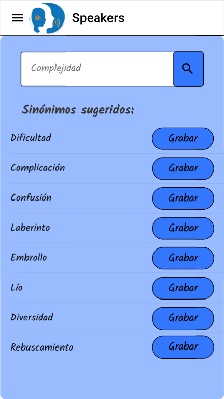

Herramientas de la app
Grabar Palabras
Podrás buscar entre un gran catálogo de palabras para practicar tu pronunciación. Recibirás un reporte sobre la precisión con la que pronunciaste cada palabra. Además, podrás volver a grabar cada palabra las veces que sea necesario para una mejora continua.
Cambiar Palabras
Con la ayuda de nuestra biblioteca de palabras tendrás la opción de buscar cualquier palabra y obtener sinónimos con mayor facilidad de pronunciación. Además, esta herramienta se complementa con "Grabar Palabras".

Practicar Vocabulario
Con la ayuda de esta herramienta podrás mejorar tu propio léxico e incrementarás tu vocabulario personal con el fin de adquirir un mejor banco de palabras para poder expresarte. Esto lo lograrás con una serie de preguntas diseñadas por profesionales les lenguaje.
Buscar Profesional
En nuestra aplicación también contarás con la opción de contactar con profesionales del lenguaje para tener una evaluación mucho más personalizada y guiada. Las reuniones se realizarán de forma virtual por el aplicativo en un entorno seguro y confidencial.